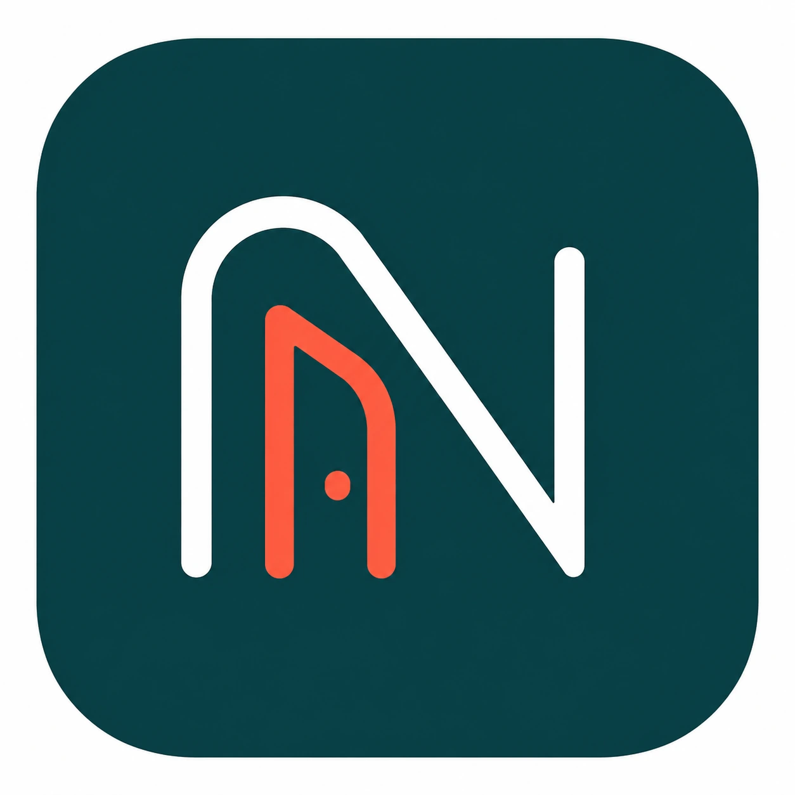

Prodotti proprietari
Ideiamo, sviluppiamo e gestiamo prodotti digitali nati all’interno di FidFellow.
BUILDING DIGITAL VENTURES
VENTURE STUDIO & AI OPERATIONS
FidFellow crea prodotti proprietari partendo da opportunità individuate internamente. Per le imprese realizza automazioni AI e sistemi di digitalizzazione operativa.
Ideiamo, sviluppiamo e gestiamo prodotti digitali nati all’interno di FidFellow.
Realizziamo automazioni per ridurre attività manuali, ripetitive e soggette a errore.
Trasformiamo procedure aziendali frammentate in flussi digitali più ordinati e utilizzabili.
CHI SIAMO
FidFellow crea e sviluppa prodotti digitali propri. Le idee nascono internamente e vengono trasformate in progetti concreti.
Accanto ai prodotti proprietari, FidFellow offre alle aziende servizi di automazione AI e digitalizzazione dei processi. Non sviluppiamo startup o idee imprenditoriali per conto di terzi.
COME LAVORIAMO
Prima comprendiamo il problema. Poi verifichiamo la soluzione, costruiamo ciò che serve e misuriamo l’utilizzo reale.
Definiamo problema, contesto e destinatari.
Verifichiamo ipotesi, utilità e fattibilità.
Realizziamo un prodotto o un sistema utilizzabile.
Lo portiamo nel lavoro o nel mercato reale.
Correggiamo e sviluppiamo sulla base dei risultati.
DOVE CI CONCENTRIAMO
I NOSTRI PRODOTTI
Presentiamo soltanto progetti reali e informazioni che possiamo confermare.

Nuvia è la piattaforma proprietaria FidFellow dedicata all’ospitalità indipendente. Aiuta hotel, B&B e case vacanza a gestire richieste ripetitive, organizzare la giornata operativa e avere una visione più chiara della struttura.
CONTATTI
Valutiamo progetti B2B con un processo concreto da migliorare attraverso automazione AI o digitalizzazione. Non sviluppiamo idee di startup per conto di terzi.
fidfellow@outlook.it ↗Indica azienda, processo attuale, problema e risultato desiderato. Ti risponderemo se il progetto è coerente con ciò che facciamo.